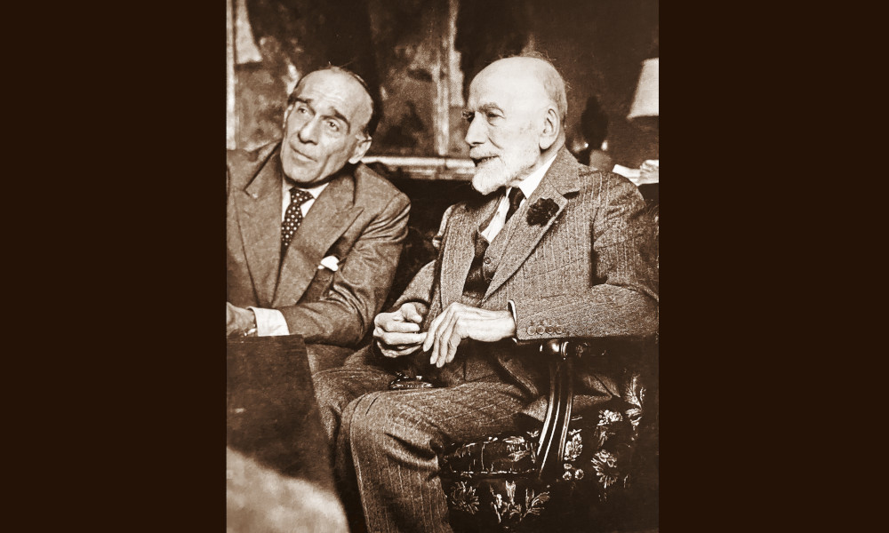

Albrighi
Firenze, entità attiva dal 1961 al 1979

- PERSONA
- Luigi Albrighi, 1896–1979, avvocato e antiquario
- IN CATALOGO
- Opere transitate, catalogo della Fondazione Zeri →
Luigi Albrighi (1896-1979) nacque a Milano e inizialmente praticò l'avvocatura. Abbandonata la professione, si trasferì a Firenze intorno al 1920, iniziando la carriera di mercante d'arte. Albrighi si interessò al commercio di dipinti e opere medievali e rinascimentali, assecondando le richieste dei collezionisti dell'epoca. Nella città toscana, dove l'antiquario fu attivo fino alla morte, sopraggiunta nel 1979, entrò in contatto con gli antiquari locali e in particolar modo con Eugenio Ventura (1887-1949) e con la figlia Paola. Albrighi e Paola Ventura strinsero un rapporto lavorativo e di vita, tanto che a partire dal 1961 i due risultano avere una galleria insieme a Palazzo Fossombroni, in via Dei Fossi 7r.
Luigi Albrighi fu un commerciante che seppe muoversi a livello internazionale, tra Parigi, Londra e New York, ebbe stretti rapporti con Bernard Berenson e conobbe importanti collezionisti privati, tra cui Achillito Chiesa. In occasione della vendita all'asta della collezione di quest'ultimo, nel 1925, Albrighi venne chiamato a New York per catalogare le opere messe in vendita.
Nel corso degli anni Quaranta, in ristrettezze economiche, l'antiquario venne accusato di esportazione illecita verso l'America dal tribunale di Firenze e fu coinvolto in alcune vicende di compravendita di quadri falsi. Nel 2015 il suo archivio, precedentemente vagliato e riordinato da Luciano Bellosi, è stato donato alla Fondazione Federico Zeri.
Altri antiquari
Clienti
- Achillito Chiesa
Collaboratori
- Bernard Berenson (storico dell'arte)
Bibliografia essenziale
- Cavicchi, M. (2017), Falsi di primo Novecento nell'archivio di Luigi Albrighi, In Ottani Cavina, pp. 199-225